Label Propagation Algorithms
Label propagation is a class of semi-supervised learning algorithms that spreads labels from a small set of seed nodes to unlabeled nodes through edges in a graph structure. Watch how different mathematical approaches propagate representations across our connected Stochastic Block Model (SBM) communities.
Harmonic Propagator
Uses Gaussian Random Fields to formulate label propagation as a Dirichlet problem. Unlabeled nodes are assigned the average of their neighbors' values, resulting in continuous probability scores.
Intuition
Imagine a game of telephone in a schoolyard. Some kids already know a secret color (like red or blue) and never change their minds. Other kids don't know, so they ask all their friends what color they have, and pick the average color of their friends. This continues until everyone finds a color they are comfortable with.
Min-Cut Propagator
Formulates propagation as a network flow problem. Computes the minimum capacity cut (the bottleneck) that splits the graph into source (class 0) and sink (class 1) components.
Intuition
Imagine trying to build a fence to separate two rival camps in a forest. You want to cut down as few paths as possible to completely block any way of walking from camp A to camp B. The algorithm finds the easiest place to build that fence, dividing the kids into two clear teams.
Spectral Propagator
Projects nodes into a low-dimensional space using eigenvectors of the graph Laplacian matrix, then trains an SVM classifier with an RBF kernel on these global spectral coordinates.
Intuition
Imagine a giant tangled ball of yarn where it is hard to tell who is connected to whom. Instead of untangling it, you stretch the yarn out flat on a table so you can clearly see the separate clumps. Then, you draw a line in the middle to group them.

GCN Propagator
Applies layer-by-layer symmetric graph convolutions based on Kipf & Welling's neural architecture. Diffuses label representations across local neighborhoods while accounting for node degrees.
Intuition
Imagine a school project where kids sit in groups. In each round, every student writes down what they think the topic is by combining their own ideas with what their immediate neighbors tell them. Over multiple rounds, the ideas blend together so the whole group shares the same understanding.
Active Learning Samplers
Active learning seeks to maximize model accuracy with minimal label cost by intelligently choosing which unlabeled nodes to query. Watch how each sampler operates in step-by-step query rounds to resolve class uncertainty quickly.

Harmonic Greedy Sampler
Calculates the expected graph-wide risk reduction if each candidate unlabeled node were to be queried. Selects the node that achieves the highest mathematical reduction in uncertainty.
Intuition
Imagine you are a teacher trying to help a class understand a lesson, but you only have time to answer a few questions. You ask the student whose question will help clear up the most confusion for the rest of the class, making everyone smarter all at once.

S2 Sampler
Based on Dasarathy et al. (2015). Prunes edges with conflicting labels, finds the shortest path between positive and negative nodes, and queries the middle node on that path.
Intuition
Imagine you are playing a guessing game on a line of kids standing between a red flag and a blue flag. To find where the red team ends and the blue team begins, you ask the kid standing exactly in the middle. Depending on their answer, you go to the middle of the remaining half, just like a binary search!

FeatProp Sampler
Propagates node features using graph connections to blend them with neighbors, then selects query nodes by solving a K-Medoids clustering problem to cover the entire graph layout efficiently.
Intuition
Imagine trying to pick central locations for ice cream trucks in a city. First, you let neighbors share their location info so everyone's coordinates blend smoothly with their neighbors. Then, you place a truck in the middle of each group so that every kid has to walk the shortest distance possible to get ice cream. In active learning, we query the node that acts as the best central landmark for the remaining unexplored parts of the graph.

Random Sampler
Queries nodes uniformly at random from the set of unlabeled nodes. Serves as a standard non-active baseline to measure active learning advantages.
Intuition
Imagine closing your eyes and picking a random kid from the crowd to ask for their team. It's simple and doesn't take any thinking, but you might waste your time asking kids who are already clearly sitting next to their friends on the same team.
Sampler Benchmark Dashboard
Compare the quantitative performance of Active Learning Samplers (Harmonic Greedy, S2, FeatProp, Random) across various graph structures. Each benchmark displays the true labels of the graph topology on the left, and its Expected Risk and Prediction Accuracy curves on the right over up to 200 query steps.
Graph 1 Topology & True Labels
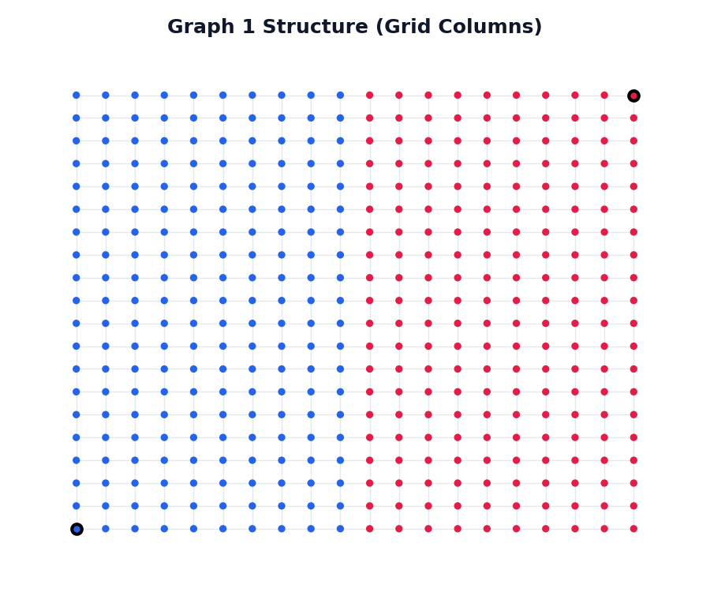
Left-Right community structure (Class 0 in Blue, Class 1 in Red). Large bordered nodes indicate initial seeds.
Expected Risk Reduction Curve
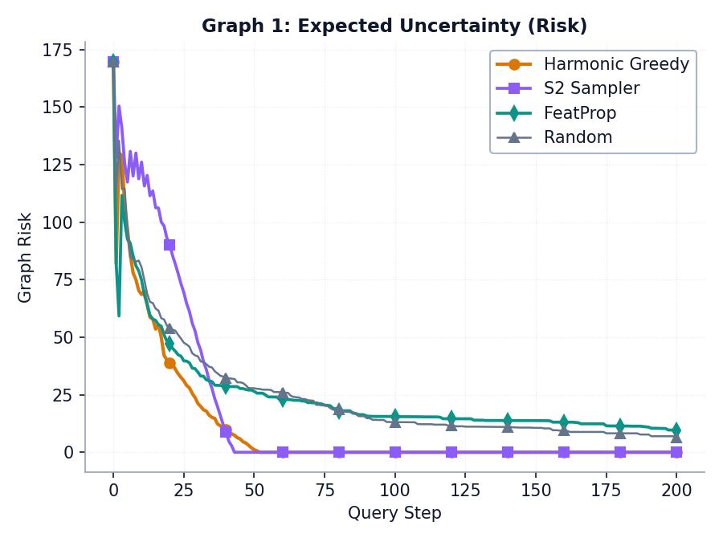
Graph uncertainty (Expected Risk) over 200 query steps. Lower is better.
Prediction Accuracy Curve
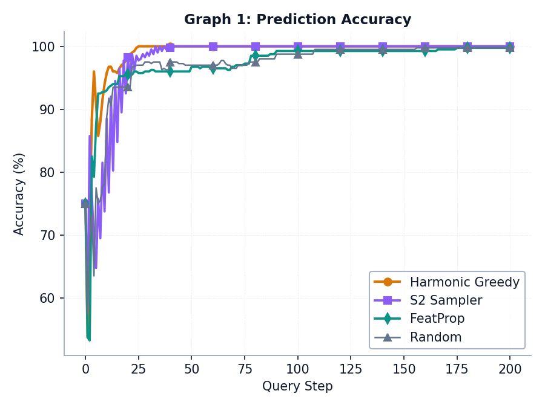
Classification accuracy over 200 query steps. Higher is better.
Graph 2 Topology & True Labels
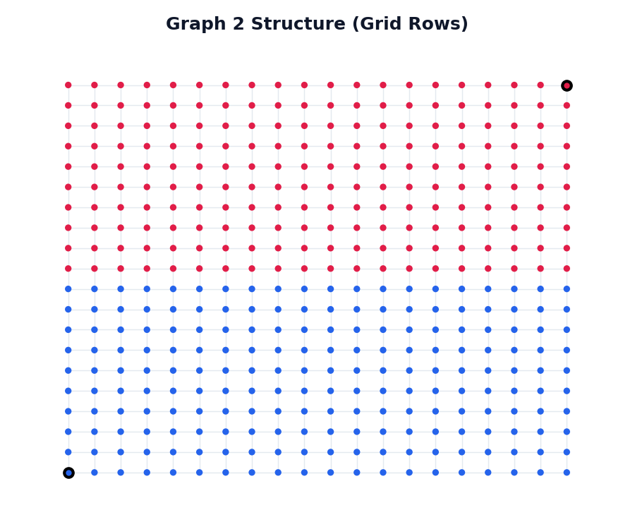
Top-Bottom community structure (Class 0 in Blue, Class 1 in Red). Large bordered nodes indicate initial seeds.
Expected Risk Reduction Curve
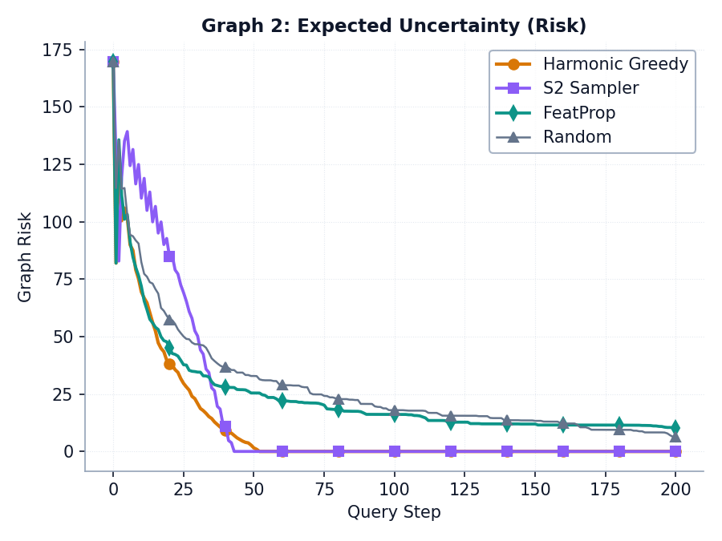
Graph uncertainty (Expected Risk) over 200 query steps. Lower is better.
Prediction Accuracy Curve
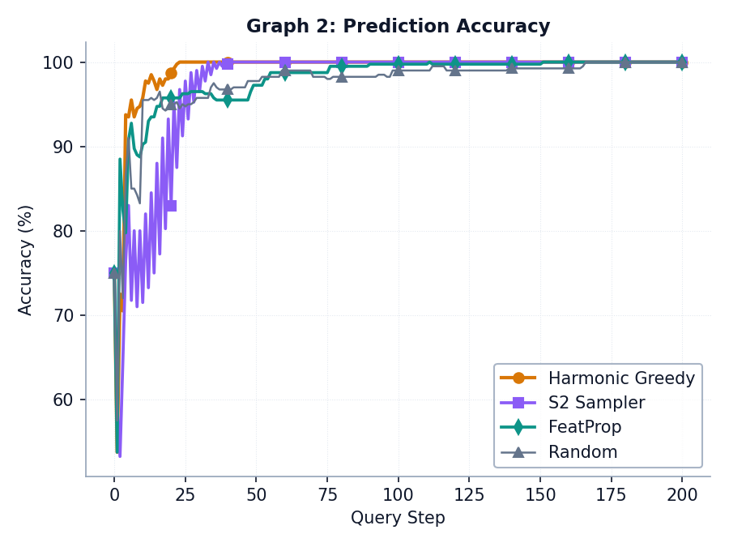
Classification accuracy over 200 query steps. Higher is better.
Graph 3 Topology & True Labels
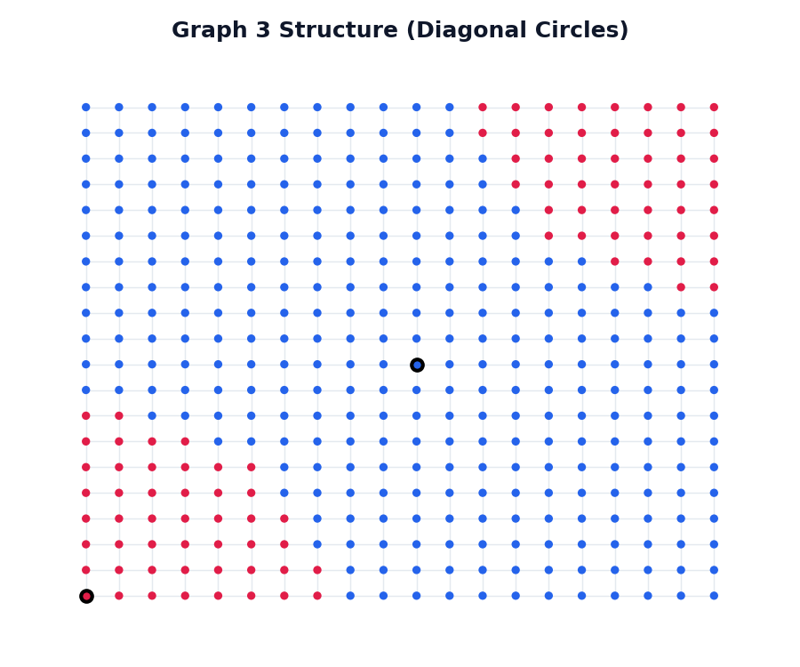
Diagonal circles structure (Class 0 in Blue, Class 1 in Red). Large bordered nodes indicate initial seeds.
Expected Risk Reduction Curve
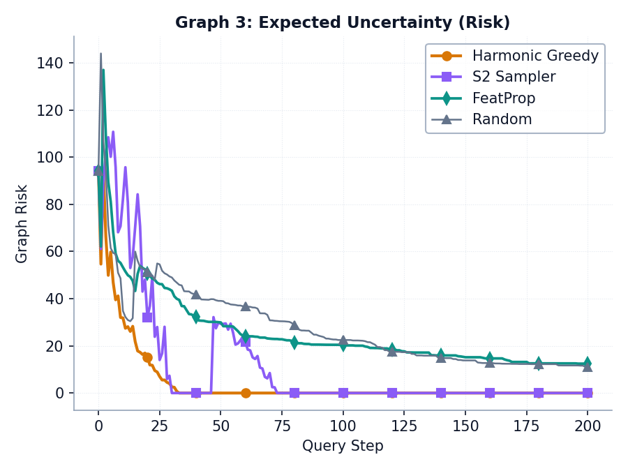
Graph uncertainty (Expected Risk) over 200 query steps. Lower is better.
Prediction Accuracy Curve
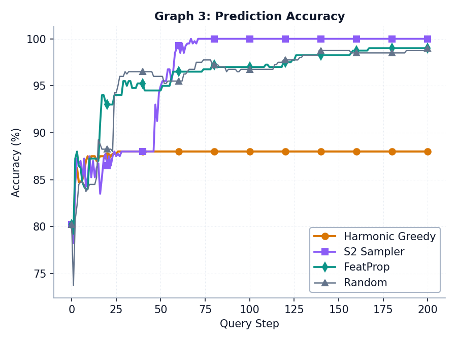
Classification accuracy over 200 query steps. Higher is better.
Graph 4 Topology & True Labels
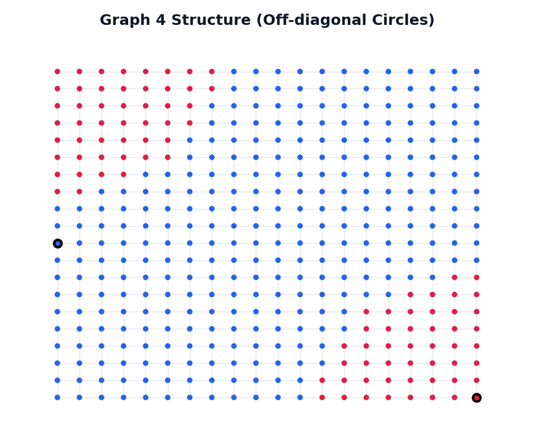
Off-diagonal circles structure (Class 0 in Blue, Class 1 in Red). Large bordered nodes indicate initial seeds.
Expected Risk Reduction Curve
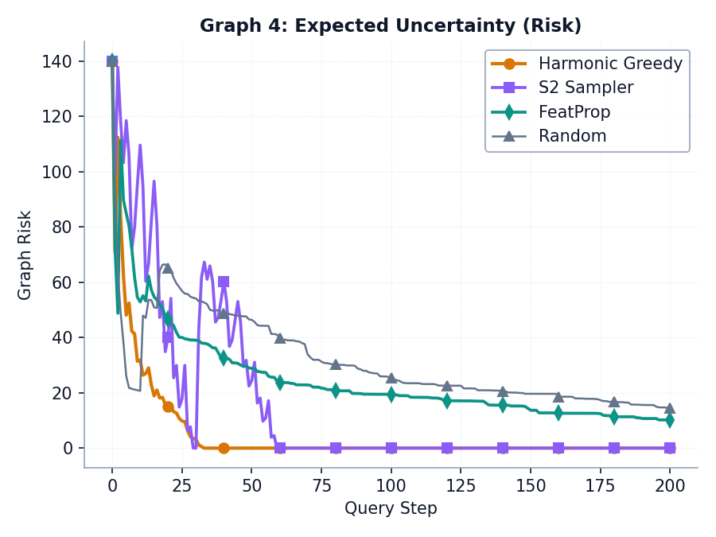
Graph uncertainty (Expected Risk) over 200 query steps. Lower is better.
Prediction Accuracy Curve
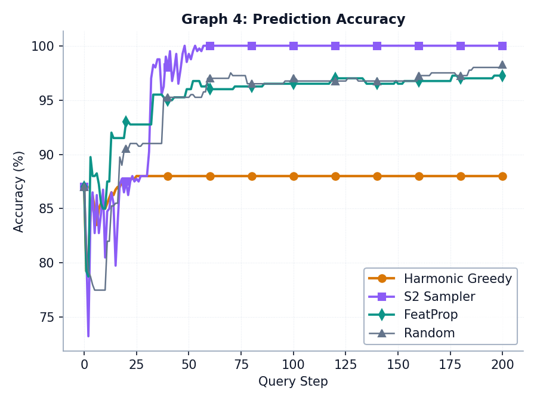
Classification accuracy over 200 query steps. Higher is better.
Graph 5 Topology & True Labels
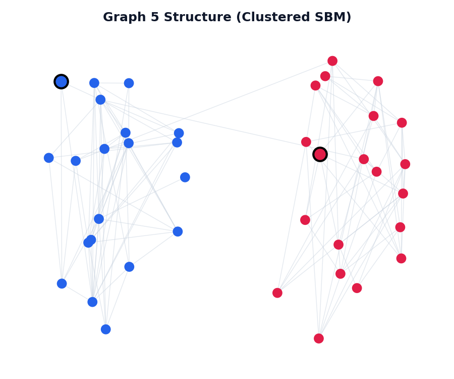
40-Node Clustered Community SBM structure (Class 0 in Blue, Class 1 in Red). Large bordered nodes indicate initial seeds.
Expected Risk Reduction Curve

Graph uncertainty (Expected Risk) over 35 query steps. Lower is better.
Prediction Accuracy Curve

Classification accuracy over 35 query steps. Higher is better.
Live Active Learning Simulator
Configure a graph structure, label propagator, and active learning sampler, then watch the algorithm query nodes and propagate labels in real time! You can also click on gray nodes to query them manually.